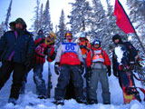
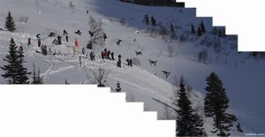
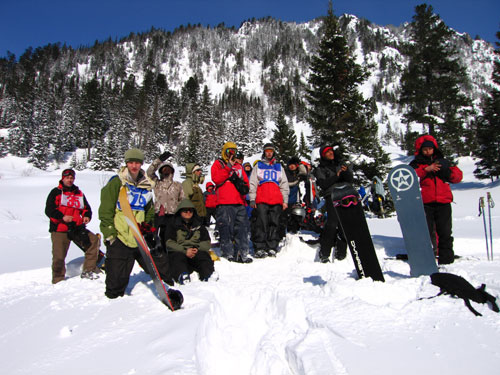
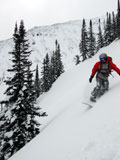
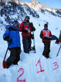
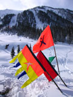

|
|
|
Соревнования на Мамае от Байкальского Экстрима
(11-12 марта 2006) Решил прогуляться на Мамай в компании Лёхи Пестова и Вовы Языка. А чего дома со сломаной рукой сидеть, не нога же сломана :) заодно любопытно было бы глянуть и пофотать соревы от Байкальского Экстрима - III открытый Чемпионат Республики Бурятии по фрирайду. Да и на бывалых людей посмотреть, ведь приедет весь цвет катального народа из Улан-Удэ, Иркутска, Ангарска... Все так и получилось - быстро добежали до зимухи, скинули вещи, перекусили и пошли смотреть соревнования по фрирайду, точнее я пошел, а Вова и Лёха пошли раскатывать Лесной пупырь. Погода морозная, не смотря на март и солнце, ветер дует как надо и народ, ожидающий зрелищ напротив Большого кулуара, медленно и верно подмерзал.  "Нарядные нагрудные номера получили 8 бордеров и 4 горно-лыжника. Для того что бы победить, надо было просто проехать без падений и желательно удачно прыгнуть хотя бы с пару кочек. Первым среди сноубордистов стартовал Черных Денис. 1 минуту и 49 секунд понадобилось ему на то, что бы чисто заземлив три прыжка, агрессивно и стильно пройти весь кулуар. Выступавший вторым и занявший соответственно второе место Кузьмин Олег, отличился тем что совершил гигантский полёт с средней скалы метров эдак на 15-20. Третьим стал прошлогодний победитель - Арсентьев Сергей. Среди горно-лыжников безоговорочно первый - Трифонов Александр (Ангарск), быстро (1:35) и технично прошедший весь кулуар и чисто прыгнувший с нижнего камня. Второй - наш Кузнецов Евгений, третий - Сенных Евгений..."Это был отрывок из отчета Байкальского Экстрима, а весь отчет и фоты смотрите на сайте Baikal-Extreme.ru
 А потом еще были соревнования по бигэйру. Тут я запомнил
мало, потому что первый участник дугообразно вылетел с трамплина и приземлился
у меня на голове :) Вот так бывает - пришел человек с гипсом на руке,
а ушел еще и с гипсом на голове! Ну это я не о себе, мне повезло, удар
не кантом и по касательной, но как череп хрустел слышали все :) легкое
сотрясение мозга, к чему в этом сезоне уже привык. Сноуборд, зараза,
опасный! Даже если ты не на доске! Не буду показывать пальцем, но предупреждаю
- держитесь подальше от Димы Алексеева :) Вскоре пришли Вова и Лёха, а с ними Тимон Дронов и его корефан Рома. Последние два товарища внесли 40-градусное оживление в вечеринку, которая продолжалась до трех часов ночи и сопровождалась офигенным драйвом гитары и губной гармоники - тут уже отжигал Лёха! Ребята на следующий день еще кажется где-то катались, а я то точно отсыпался, чего с инвалида взять :)
 Участники соревнований по фрирайду. Фото Байкальского Экстрима
Март 2006 - Февраль 2007. Белокрылов Алексей |
Из протоколов: Фрирайд (борд)  Фрирайд (лыжи)  БигЭйр (борд) Полный протокол соревнований на сайте Байкальского Экстрима  |